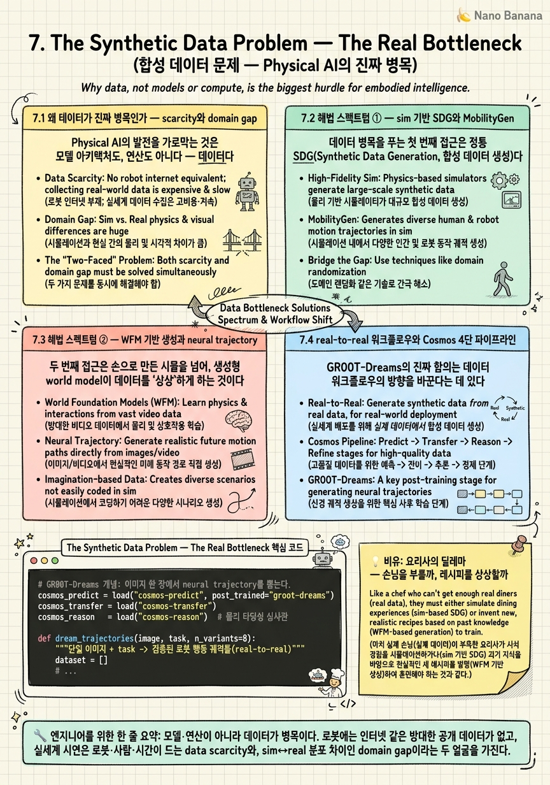
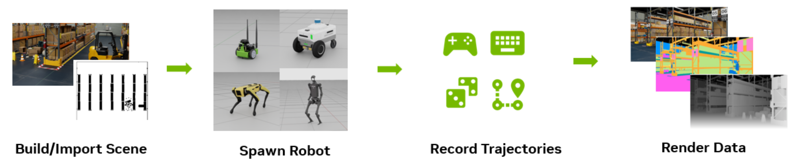
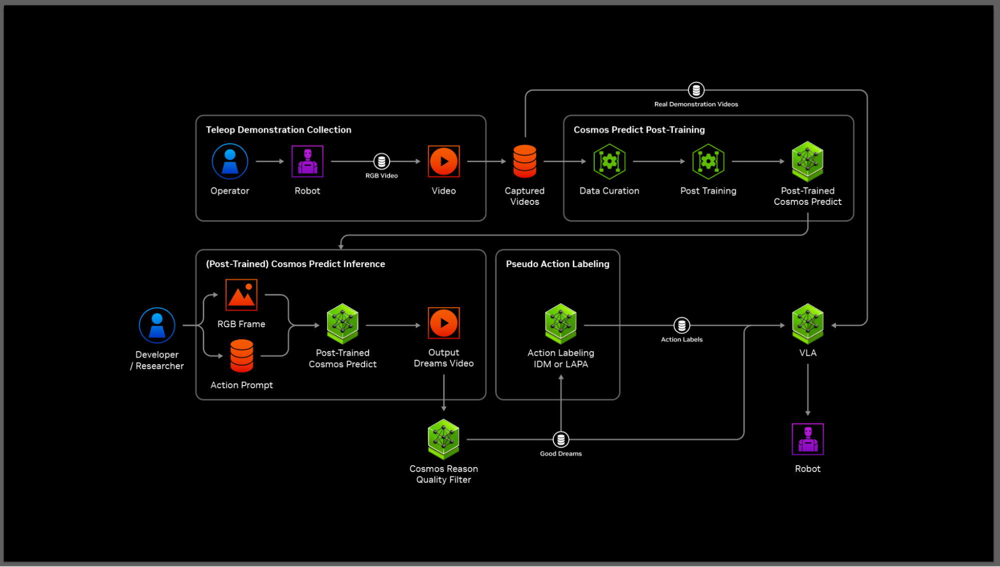

The Synthetic Data Problem — The Real Bottleneck

🎯 학습 목표
- Physical AI에서 데이터가 병목인 근본 이유를 설명한다
- sim SDG(MobilityGen)와 WFM 기반 생성의 차이를 안다
- GR00T-Dreams의 neural trajectory 생성(780K/11h)을 이해한다
- real-to-real·real-to-sim 데이터 워크플로우를 구분한다
- Data Factory Blueprint가 이 병목을 산업화하는 방식을 안다
지난 여섯 챕터가 'Physical AI를 만드는 도구'였다면, 이 챕터는 그 모든 도구가 결국 무엇을 위해 존재하는지를 정면으로 다룬다. LLM 혁명이 인터넷이라는 방대한 텍스트 데이터 위에서 일어났듯, Physical AI 혁명도 데이터를 먹고 자란다. 그런데 로봇에게는 '인터넷'이 없다. 여기서 Physical AI의 진짜 병목이 드러난다 — 데이터 부족(data scarcity)과 domain gap.
로봇 데이터는 왜 이토록 비싼가? 텍스트는 웹을 크롤링하면 공짜에 가깝지만, 로봇이 물건을 집는 시연 데이터는 실제 로봇·실제 사람·실제 시간이 있어야 모인다. 사람이 로봇 팔을 원격조종(teleop)해 시연 하나를 모으는 데 수십 초가 걸리고, 수만 개가 필요하니 수천 시간의 노동이 든다. 게다가 시뮬에서 값싸게 모은 데이터는 실세계와 미묘하게 달라(domain gap) 그대로 옮기면 정책이 실패한다. 이 두 문제가 Physical AI 확장의 근본 장벽이다.
이 챕터는 NVIDIA가 이 병목을 푸는 해법의 스펙트럼을 훑는다 — 한쪽 끝의 sim 기반 SDG(MobilityGen), 다른 쪽 끝의 WFM 기반 생성(GR00T-Mimic·GR00T-Dreams), 그리고 이 둘을 잇는 Cosmos 증강 파이프라인. 특히 GR00T-Dreams가 단일 이미지에서 로봇의 행동 궤적을 상상해내는 'neural trajectory' 개념과, 780K 궤적을 11시간에 생성해 6.5K시간의 인간 시연에 맞먹는 충격적 수치를 파고든다. 마지막으로 이 모든 것을 산업화하는 GTC 2026의 Physical AI Data Factory Blueprint까지, '데이터를 어떻게 공장처럼 찍어내는가'를 지도로 그린다.
핵심 내용
7.1 왜 데이터가 진짜 병목인가 — scarcity와 domain gap
Physical AI의 발전을 가로막는 것은 모델 아키텍처도, 연산도 아니다 — 데이터다. 이 병목은 두 얼굴을 가진다.
Data scarcity(데이터 희소성) = 로봇이 배울 실세계 행동 데이터가 절대적으로 부족한 문제. 언어 모델은 인터넷 텍스트로 학습하지만, '로봇이 물건을 집고 문을 여는' 물리적 행동에는 그런 방대한 공개 데이터셋이 없다.
왜 없는가? 로봇 데이터는 수집 비용이 근본적으로 높기 때문이다. 시연 하나를 모으려면 실제 로봇 하드웨어, 그것을 조종할 사람(teleoperation), 물리적 시간, 그리고 안전한 환경이 모두 있어야 한다. 사람이 로봇을 원격조종해 'pick and place' 한 번을 시연하는 데 수십 초가 걸리고, 견고한 정책 학습에는 수만~수십만 개의 다양한 시연이 필요하다. 산술적으로 수천 시간의 인간 노동이 필요하다는 뜻이다. 텍스트 크롤링과는 비교가 안 되는 비용 구조다.
두 번째 얼굴이 domain gap이다.
Domain gap(도메인 갭) = 시뮬레이션(또는 생성된 데이터)과 실세계 사이의 분포 차이. 조명·재질·물리 파라미터·센서 노이즈가 미묘하게 달라, sim에서 완벽했던 정책이 real에서 무너지는 현상.
domain gap 때문에 '그냥 시뮬에서 값싸게 대량 생성하면 되지 않나'라는 순진한 해법이 통하지 않는다. 시뮬 데이터가 아무리 많아도 실세계와 다르면 정책은 실세계에서 실패한다. 그래서 Physical AI의 데이터 문제는 단순히 '양을 늘리는 문제'가 아니라 '실세계와 부합하는 양을 값싸게 늘리는 문제'다. 이 챕터의 모든 해법은 결국 이 두 축 — scarcity(양)와 domain gap(질/부합성) — 을 동시에 공략하는 시도로 읽어야 한다. NVIDIA의 전략은 명확하다: 실데이터를 조금만 수집하고, 시뮬과 생성형 AI로 물리 타당성을 지키며 대량 증폭한다.
7.2 해법 스펙트럼 ① — sim 기반 SDG와 MobilityGen
데이터 병목을 푸는 첫 번째 접근은 정통 SDG(Synthetic Data Generation, 합성 데이터 생성)다 — 손으로 만든 물리 시뮬레이터(Isaac Sim)를 돌려 라벨이 완벽하게 붙은 데이터를 대량으로 뽑는 것이다. 시뮬 안에서는 물체의 정확한 위치·속도·분할 마스크를 공짜로 알 수 있으니, 실세계에서는 값비싼 라벨링이 자동으로 해결된다.
이 접근의 대표 도구가 MobilityGen(모빌리티젠)이다.
MobilityGen(모빌리티젠) = Isaac Sim 기반의 합성 모션 데이터 생성 도구. 여러 embodiment(로봇 몸체)와 환경에서 대량의 이동·행동 데이터셋을 자동 생성한다.
MobilityGen이 한 번의 실행으로 뽑아내는 데이터는 로봇 학습에 필요한 거의 모든 modality를 아우른다.
- occupancy map(점유 격자 지도): 환경의 어디가 막혀 있고 어디가 비었는지
- pose / velocity: 로봇의 위치·자세·속도의 정확한 ground truth
- RGB / depth / segmentation: 카메라·깊이·분할 센서 데이터
- action: 각 시점에 로봇이 취한 행동
데이터를 어떻게 수집하는가도 세 방식으로 유연하다.
- teleop(원격조종): 사람이 시뮬 속 로봇을 직접 조종해 자연스러운 궤적 수집
- random(무작위): 무작위 행동으로 넓은 상태 공간 탐색
- path-planning(경로 계획): 계획된 경로를 따라 목적 지향 궤적 생성
MobilityGen의 힘은 embodiment·환경의 조합 폭발을 값싸게 커버한다는 데 있다. 실세계라면 로봇 종류마다, 환경마다 따로 데이터를 모아야 하지만, 시뮬에서는 같은 파이프라인에 다른 로봇 asset과 다른 환경을 얹어 자동으로 대량 생성한다. 이것이 Chapter 6에서 본 '새 로봇을 embodiment asset·task로 얹는' 스택 원리의 데이터 층 구현이다. 다만 이 접근의 태생적 한계가 domain gap이다 — 시뮬이 아무리 정밀해도 실세계와의 미세한 차이는 남는다. 그래서 SDG만으로는 부족하고, 다음 절의 WFM 기반 생성이 그 간극을 메우러 등장한다.

7.3 해법 스펙트럼 ② — WFM 기반 생성과 neural trajectory
두 번째 접근은 손으로 만든 시뮬을 넘어, 생성형 world model이 데이터를 '상상'하게 하는 것이다. 여기 두 개의 GR00T 도구가 있다.
GR00T-Mimic(그루트 미믹) = 소수의 인간 시연(human demo)을 Isaac Lab에서 대량의 궤적으로 증강(augmentation)하는 도구. 몇 개의 시연을 물리적으로 타당한 수천 개의 변형 궤적으로 불린다(Cosmos로 기존 데이터를 증강). '조금 시연하고 많이 불리기'의 전형이다.
그리고 이 챕터의 하이라이트인 GR00T-Dreams다.
GR00T-Dreams(그루트 드림스) = Cosmos Predict WFM을 post-training한 뒤, 단일 이미지 하나를 입력받아 '로봇이 새로운 task를 새로운 환경에서 수행하는 영상'을 생성하고, 그 영상에서 행동을 추출해내는 데이터 생성 도구.
작동 원리가 놀랍다. (1) 로봇과 환경이 담긴 이미지 한 장과 원하는 task를 준다. (2) post-training된 Cosmos Predict가 그 task를 수행하는 미래 영상을 상상해 생성한다. (3) 그 생성된 영상에서 로봇이 취해야 할 행동을 action token으로 추출한다. 이렇게 뽑아낸 행동 궤적을 neural trajectory(뉴럴 궤적)라 부른다.
Neural trajectory(뉴럴 궤적) = 실제 로봇이나 물리 시뮬이 아니라, world model이 상상한 영상에서 추출한 로봇 행동 궤적. 물리 엔진이 아니라 신경망의 학습된 세계 지식이 궤적을 만들어낸다.
이것이 왜 혁명적인가? SDG(MobilityGen)는 여전히 물리 시뮬레이터를 돌려야 하고, 새 환경마다 3D 씬을 만들어야 한다. 반면 GR00T-Dreams는 이미지 한 장에서 새 환경·새 task의 데이터를 생성한다 — 3D 씬 구축 없이, world model이 학습한 물리 상식으로 곧장 궤적을 뽑는다. 시뮬 제작의 병목마저 건너뛰는 셈이다.
수치가 이 접근의 위력을 증언한다. GR00T-Dreams는 780K개의 궤적을 단 11시간에 생성했는데, 이는 사람이 직접 모으면 6,500시간(6.5K시간)의 인간 시연에 맞먹는 양이다. 11시간 대 6,500시간 — 약 590배의 시간 압축이다. 그리고 결정적으로, 이렇게 생성한 데이터를 실제 데이터와 결합해 학습하면 GR00T N1 정책의 성능이 +40% 향상됐다. neural trajectory가 단순히 '많은' 데이터가 아니라 '쓸모 있는' 데이터임을 보여주는 증거다.
7.4 real-to-real 워크플로우와 Cosmos 4단 파이프라인
GR00T-Dreams의 진짜 함의는 데이터 워크플로우의 방향을 바꾼다는 데 있다. 전통적 접근이 'sim-to-real'(시뮬에서 학습해 실세계로)이라면, GR00T-Dreams는 'real-to-real'을 연다.
Real-to-real(리얼투리얼) 워크플로우 = 소량의 실데이터에서 출발해 → world model로 대량의 합성 궤적을 생성하고 → 그 합성 데이터로 실로봇을 학습시키는 흐름. 실세계에서 출발해 실세계로 돌아오되, 중간의 증폭을 시뮬 씬이 아니라 신경망 상상으로 채운다.
앞 챕터의 개념들과 구분해두자. Real-to-sim은 실세계 관찰을 시뮬로 되가져와 재현하는 방향이고(Chapter 6의 피드백 루프), real-to-real은 그 중간 단계에서 명시적 3D 시뮬 없이 world model이 곧장 궤적을 생성한다는 점이 다르다. sim이라는 중간 표현을 건너뛰는 것이 real-to-real의 핵심이다.
이 생성이 신뢰할 만한 데이터가 되려면, 상상을 검증·정제하는 파이프라인이 필요하다. Cosmos의 세 축(Chapter 5)이 여기서 4단 데이터 파이프라인으로 조립된다.
- Isaac Sim (sim): 물리 정확한 base 장면·데이터 제공
- Cosmos Predict: 그 장면에서 미래 rollout(가능한 전개)을 생성
- Cosmos Transfer: 생성된 장면에 domain randomization 적용 — 조명·재질·날씨를 바꿔 다양성 확보
- Cosmos Reason: 각 결과의 물리 타당성을 검증하고, 저품질을 필터링하며 태깅
이 파이프라인의 산출물이 '고품질·물리 타당·다양한' 데이터셋이고, 이것이 GR00T나 인식 모델(perception model) 학습으로 투입된다. NVIDIA의 표현을 빌리면, '수개월 걸릴 IL(모방학습) 데이터를 수십 시간으로' 압축하는 엔진이다.
주목할 지점은 Reason의 역할이다. 생성형 모델은 필연적으로 물리적으로 말이 안 되는 결과(물체가 공중에 뜨는 등)를 뱉는다. Reason이 이를 걸러내지 않으면, 대량 생성은 대량의 쓰레기를 만들 뿐이다. 양(Predict·Transfer)과 질(Reason)이 짝을 이뤄야 비로소 domain gap을 줄인 쓸모 있는 데이터가 나온다. 이것이 왜 Cosmos가 '생성'만이 아니라 '검증'까지 한 플랫폼에 묶여 있는지에 대한 답이다.

7.5 Physical AI Data Factory — 데이터 생성의 산업화
개별 도구(MobilityGen·GR00T-Dreams·Cosmos 파이프라인)를 넘어, NVIDIA의 야심은 이 모든 것을 하나의 반복 가능한 '공장'으로 묶는 것이다. 그 청사진이 GTC 2026에서 제시된 Physical AI Data Factory Blueprint다.
Physical AI Data Factory Blueprint(피지컬 AI 데이터 팩토리 블루프린트) = world modeling, humanoid skill, AV(자율주행) 데이터 생성을 표준화·산업화하는 참조 설계(blueprint). 데이터 생성을 일회성 실험이 아니라 반복 가능한 생산 공정으로 만든다.
'blueprint'라는 단어가 핵심이다. NVIDIA는 완성품 하나를 파는 게 아니라, 기업이 자사 로봇·도메인에 맞춰 데이터 공장을 세울 수 있는 참조 아키텍처를 제공한다. 이 안에는 앞서 본 요소들 — SDG(MobilityGen), WFM 생성(GR00T-Dreams), Cosmos 4단 파이프라인 — 이 표준화된 부품으로 조립되어 있다. 목표는 명확하다: domain gap 완화를 대규모로, 반복적으로 수행하는 것.
왜 '공장'이라는 은유가 적절한가? 초기 연구에서 합성 데이터 생성은 장인의 수작업에 가까웠다 — 연구자가 씬을 만들고, 파라미터를 조율하고, 결과를 손으로 검수했다. Data Factory는 이를 산업혁명처럼 표준화·자동화한다. 입력(소량 실데이터·목표 task)을 넣으면, 정해진 공정을 거쳐 학습 가능한 고품질 데이터셋이 나오는 조립 라인이다. 이 산업화가 있어야 GR00T 같은 foundation model을 여러 embodiment·도메인으로 확장하는 데 필요한 데이터 규모를 감당할 수 있다.
마지막으로 이 흐름이 우리 이전 학습과 어떻게 연결되는지 짚자. 이전 COMPASS 코스에서 다룬, Cosmos-Transfer로 rendering gap을 메우는 사례(COMPASS Cross-Embodiment)가 바로 이 Data Factory 사고의 한 단면이다 — 시뮬 렌더링과 실세계 사이의 시각적 간극을 Transfer의 domain randomization으로 좁히는 것. Data Factory Blueprint는 그런 개별 기법들을 world modeling·humanoid·AV 전 영역으로 확장한 산업적 종합판이다. 정리하면, 이 챕터의 여정은 '데이터가 병목이다'라는 문제 제기에서 출발해, SDG·WFM 생성·검증 파이프라인을 거쳐, 그 모두를 반복 가능한 공장으로 산업화하는 데서 닫힌다. 다음 챕터의 GR00T는 바로 이 공장이 먹여 키운 모델이다.
💡 비유로 이해하기
새 로봇 셰프에게 수만 가지 요리를 가르쳐야 한다고 상상하자. 가장 정직한 방법은 실제 손님 수만 명을 불러 매번 요리를 시키고 그 과정을 녹화하는 것이다(실데이터 수집). 하지만 손님 한 명 한 명이 시간·비용이고, 수만 번을 반복하려면 수천 시간이 든다. 이것이 data scarcity다.
첫 번째 대안 — 가상 주방(Isaac Sim SDG, MobilityGen)을 짓는다. 컴퓨터 속 완벽한 주방에서 로봇이 무한히 요리를 연습하고, 모든 재료의 무게·온도가 자동으로 기록된다(완벽한 라벨). 값싸고 대량이다. 하지만 가상 주방의 불 세기가 실제와 미묘하게 달라(domain gap), 진짜 주방에 서면 요리가 어긋난다.
두 번째 대안이 더 놀랍다 — 상상하는 요리사(GR00T-Dreams)다. 재료 사진 한 장만 보여주면, 이 요리사는 '이 재료로 새 요리를 만드는 전 과정'을 머릿속 영상으로 그려내고, 그 영상에서 손동작(action)을 그대로 뽑아낸다. 가상 주방조차 지을 필요가 없다 — 사진 한 장에서 요리 궤적(neural trajectory)이 나온다. 게다가 이 상상 요리사는 11시간 만에 780,000개의 요리 시연을 뽑는데, 진짜 사람이 하면 6,500시간이 걸릴 양이다.
다만 상상은 때로 틀린다 — 국자가 공중에 뜨거나 물리 법칙을 어긴 장면을 그릴 수 있다. 그래서 옆에 까다로운 심사위원(Cosmos Reason)을 둔다. 말이 안 되는 상상은 버리고, 그럴듯한 것만 레시피북에 넣는다. 그리고 이 전체 과정 — 사진 넣기, 상상하기, 다양하게 변주하기(Transfer), 심사하기 — 을 버튼 하나로 돌아가는 자동 레시피 공장(Data Factory Blueprint)으로 만든다. 손님을 부르는 대신, 검증된 상상을 공장에서 찍어내는 것 — 이것이 Physical AI가 데이터 병목을 푸는 방식이다.
💻 코드 예시
GR00T-Dreams 스타일의 데이터 생성 루프를 개념 코드로 표현한다. 실제 API가 아니며, 요점은 '단일 이미지 → world model이 미래를 상상 → 그 영상에서 action token(neural trajectory) 추출 → 물리 검증 필터'라는 흐름이다.
# GR00T-Dreams 개념: 이미지 한 장에서 neural trajectory를 뽑는다.
cosmos_predict = load("cosmos-predict", post_trained="groot-dreams")
cosmos_transfer = load("cosmos-transfer")
cosmos_reason = load("cosmos-reason") # 물리 타당성 심사관
def dream_trajectories(image, task, n_variants=8):
"""단일 이미지 + task -> 검증된 로봇 행동 궤적들(real-to-real)"""
dataset = []
# 1) DREAM: 이미지 한 장에서 'task 수행 미래 영상'을 상상 생성
dream_video = cosmos_predict.imagine(image=image, task=task)
# 2) DIVERSIFY: 조명/재질/날씨를 바꿔 domain gap 대비 다양화
for cond in sample_conditions(n_variants):
varied = cosmos_transfer.randomize(dream_video,
light=cond.light, material=cond.mat)
# 3) EXTRACT: 상상한 영상에서 행동을 action token으로 추출
neural_traj = extract_action_tokens(varied) # <- neural trajectory
# 4) VERIFY: 물리적으로 말이 되는 궤적만 통과 (뜨는 물체 등 제거)
if cosmos_reason.is_physically_plausible(varied):
dataset.append({"trajectory": neural_traj, "task": task,
"domain": cond.name})
return dataset
# real 데이터 소량 + dream 데이터 대량을 결합 -> GR00T N1 성능 +40%
real = load_teleop_demos(n=200) # 값비싼 실데이터 소량
dreamed = []
for img, task in seed_images: # 이미지 몇 장이 씨앗
dreamed += dream_trajectories(img, task) # 11h에 ~780K 규모까지 확장
train_policy("groot-n1", data=real + dreamed) # real+synthetic 결합 학습핵심은 '시뮬 씬 없이 이미지에서 곧장 궤적을 뽑는다'는 점이다. (1) cosmos_predict.imagine은 이미지 한 장과 task만으로 그 task를 수행하는 미래 영상을 상상한다 — 3D 씬 구축을 건너뛰는 real-to-real의 출발점이다. (2) cosmos_transfer.randomize가 조명·재질을 바꿔 domain gap에 강인하도록 다양화한다. (3) extract_action_tokens가 상상 영상에서 로봇 행동을 뽑는데, 이 산출물이 바로 neural trajectory다 — 물리 엔진이 아니라 신경망의 세계 지식이 만든 궤적. (4) cosmos_reason.is_physically_plausible가 물리 위반 결과를 걸러, 대량 생성이 대량 쓰레기가 되지 않게 막는다. 맨 아래를 보면 값비싼 real 시연 200개와 이미지 씨앗에서 상상한 대량 dreamed 데이터를 결합해 학습한다 — 이 결합이 GR00T N1 성능 +40%의 실제 레시피다. 소량 real + 대량 검증된 상상, 이것이 데이터 병목을 푸는 공식이다.
🏭 현업에서의 평가
✅ 시니어가 보는 것
- Physical AI의 병목을 '데이터'로 정확히 짚고, data scarcity(수집 비용)와 domain gap(sim↔real 분포 차이)이라는 두 축으로 분해하는가
- sim 기반 SDG(MobilityGen: 완벽한 라벨·조합 확장 vs domain gap 한계)와 WFM 기반 생성(GR00T-Dreams: 씬 없이 이미지에서 생성)의 차이·트레이드오프를 설명하는가
- neural trajectory 개념 — world model이 상상한 영상에서 action을 추출한 궤적 — 과 780K/11h(≈6.5K 인간시연), real 결합 시 +40%의 의미를 이해하는가
- 생성(Predict·Transfer)과 검증(Reason)이 짝을 이뤄야 하는 이유, 즉 Reason이 없으면 대량 생성이 대량 쓰레기가 됨을 아는가
- real-to-real·real-to-sim 워크플로우를 구분하고, Data Factory Blueprint가 데이터 생성을 반복 가능한 산업 공정으로 표준화함을 설명하는가
⚠️ 레드 플래그
- 병목을 모델·연산으로 오인하고 데이터임을 놓치거나, domain gap을 무시한 채 '시뮬에서 많이 뽑으면 된다'고 단순화하는 경우
- MobilityGen(sim SDG)과 GR00T-Dreams(WFM 생성)의 근본 차이(물리 시뮬 필요 vs 이미지에서 직접 생성)를 구분하지 못하는 경우
- neural trajectory를 물리 시뮬 궤적과 혼동하거나, 780K/11h 같은 수치의 의미(시간 압축·인간시연 등가)를 설명하지 못하는 경우
- 생성만 강조하고 Cosmos Reason의 물리 검증·필터링이 왜 필수인지 놓치는 경우
- Data Factory Blueprint를 완성 제품으로 오해하고, 참조 아키텍처로 데이터 생성을 산업화한다는 점을 모르는 경우
🎤 예상 인터뷰 질문
- Q1 (문제 정의): Physical AI에서 데이터가 병목인 이유를 LLM과 대비해 설명하라. data scarcity와 domain gap은 각각 무엇이며, 왜 '시뮬에서 대량 생성'만으로는 해결되지 않는가?
- Q2 (해법 비교): MobilityGen 같은 sim 기반 SDG와 GR00T-Dreams 같은 WFM 기반 생성의 차이를 설명하라. neural trajectory란 무엇이며, GR00T-Dreams가 3D 씬 구축을 건너뛸 수 있는 이유는? 780K/11h 수치가 뜻하는 바를 해석하라.
- Q3 (파이프라인·검증): 소량의 실데이터로 로봇 조작 정책을 학습시켜야 한다. Cosmos의 Isaac Sim→Predict→Transfer→Reason 4단 파이프라인을 어떻게 구성하겠는가? 이 과정에서 Reason(물리 검증)이 빠지면 무슨 일이 벌어지는가?
✨ 핵심 요약
Physical AI의 진짜 병목은 데이터다
모델·연산이 아니라 데이터가 병목이다. 로봇에는 인터넷 같은 방대한 공개 데이터가 없고, 실세계 시연은 로봇·사람·시간이 드는 data scarcity와, sim↔real 분포 차이인 domain gap이라는 두 얼굴을 가진다.
domain gap 때문에 '양만 늘리기'는 통하지 않는다
시뮬에서 값싸게 대량 생성해도 실세계와 미묘하게 달라 정책이 실패한다. 문제는 '양을 늘리기'가 아니라 '실세계와 부합하는 양을 값싸게 늘리기'다. 모든 해법이 scarcity(양)와 domain gap(부합성)을 동시에 공략한다.
MobilityGen — sim 기반 SDG의 대표
Isaac Sim 기반으로 여러 embodiment·환경에서 occupancy map·pose/velocity·RGB/depth/segmentation·action을 자동 생성한다. teleop·random·path-planning으로 수집하며, 완벽한 라벨과 조합 확장이 강점이지만 domain gap이 태생적 한계다.
GR00T-Dreams — 이미지 한 장에서 궤적을 상상한다
Cosmos Predict를 post-training해, 단일 이미지+task로 로봇이 새 task를 새 환경에서 수행하는 영상을 생성하고 action token을 추출한다. 3D 씬 구축조차 건너뛴다. GR00T-Mimic은 소수 시연을 Isaac Lab에서 대량 증강하는 짝 도구다.
Neural trajectory와 충격적 수치
neural trajectory는 물리 엔진이 아니라 world model이 상상한 영상에서 추출한 궤적이다. GR00T-Dreams는 780K 궤적을 11시간에 생성(≈6,500시간 인간 시연 상당)했고, real 데이터와 결합 시 GR00T N1 성능이 +40% 올랐다.
Cosmos 4단 파이프라인 — 생성과 검증의 짝
Isaac Sim(base)→Cosmos Predict(미래 rollout)→Cosmos Transfer(domain randomization)→Cosmos Reason(물리 검증·필터·태깅). Reason이 없으면 대량 생성은 대량 쓰레기가 된다. 수개월 IL 데이터를 수십 시간으로 압축한다.
real-to-real 워크플로우
실데이터→합성 궤적→실로봇 학습으로, 실세계에서 출발해 실세계로 돌아오되 중간 증폭을 명시적 3D 시뮬 없이 world model 상상으로 채운다. 실관찰을 시뮬로 되가져오는 real-to-sim과 구분된다.
Physical AI Data Factory Blueprint — 데이터의 산업화
GTC 2026의 청사진으로, world modeling·humanoid skill·AV 데이터 생성을 표준화·자동화하는 참조 아키텍처다. 장인의 수작업이던 합성 데이터 생성을 반복 가능한 조립 라인으로 만들어 domain gap 완화를 대규모로 수행한다.